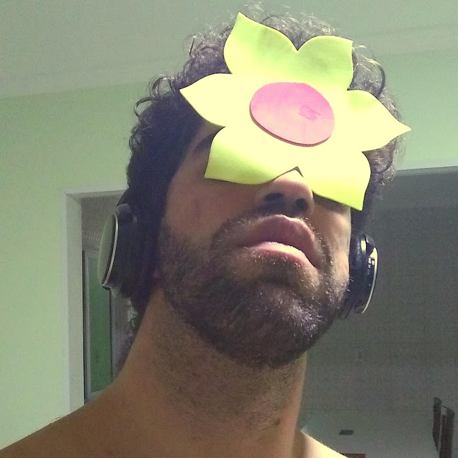

Blog pessoal de escrita criativa ou nem tanto
Este blog foi criado e recriado algumas vezes por mim, Luan, numa tentativa de me tornar um aventureiro digno pelo mundo da escrita amadora de poemas, contos, romances e qualquer coisa que a imaginação projete da minha fantasia para a fantasia coletiva do mundo.
